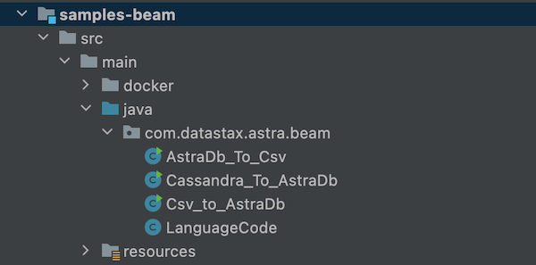
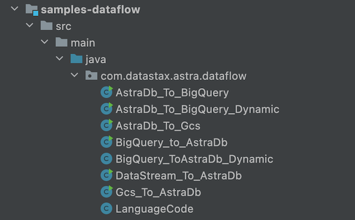

• Google Dataflow
Apache Beam Overview¶
Apache Beam is an open-source, unified programming model for batch and streaming data processing pipelines that simplifies large-scale data processing dynamics. Thousands of organizations around the world choose Apache Beam due to its unique data processing features, proven scale, and powerful yet extensible capabilities.
Apache Beam Overview

Objectives

Main Concepts

-
Pipeline: APipelineencapsulates your entire data processing task, from start to finish. This includes reading input data, transforming that data, and writing output data. All Beam driver programs must create a Pipeline. When you create the Pipeline, you must also specify the execution options that tell the Pipeline where and how to run. -
PCollection: APCollectionrepresents a distributed data set that your Beam pipeline operates on. The data set can be bounded, meaning it comes from a fixed source like a file, or unbounded, meaning it comes from a continuously updating source via a subscription or other mechanisms. Your pipeline typically creates an initial PCollection by reading data from an external data source, but you can also create a PCollection from in-memory data within your driver program. From there, PCollections are the inputs and outputs for each step in your pipeline. -
PTransform: APTransformrepresents a data processing operation, or a step, in your pipeline. Every PTransform takes one or more PCollection objects as input, performs a processing function that you provide on the elements of that PCollection, and produces zero or more output PCollection objects. -
Input and Output so called
I/O transforms: Beam comes with a number of “IOs” - library PTransforms that read or write data to various external storage systems.
I/O Connectors
Apache Beam I/O connectors provide read and write transforms for the most popular data storage systems so that Beam users can benefit from natively optimised connectivity. With the available I/Os, Apache Beam pipelines can read and write data to and from an external storage type in a unified and distributed way.
Integration with DataStax Astra is inspired by the built-in
CassandraIOandPulsarIOconnectors. This integration leverages a newAstraIOconnector.
Runners
A runner in Apache Beam is responsible for executing pipelines on a particular processing engine or framework, such as Apache Flink or Google Cloud Dataflow. The runner translates the Beam pipeline into the appropriate format for the underlying engine, manages job execution, and provides feedback on job progress and status.

Rational on technical integrations Choices
Astra allows both bulk and real time operations through AstraDB and Astra Streaming. For each service there are multiple interfaces available and integration with Apache Beam/Google Dataflow is possible in different ways. Some of the design choices for this integration are below:

Data Bulk Operations
The Astra service which handles massive amount of data is Astra DB. It provides multiples ways to load data but some methods are preferred over others.
-
Cassandra and CQL: This is the way to go. It is the most mature and provides an efficient way to execute queries. With the native drivers you can run reactive queries and token range queries to distribute the load across the nodes. This is the approach that was taken with the originalCassandraIOconnector. The existingCassandraIOconnector does not support Astra but we leveraged it to create a newAstraIOconnector. -
CQL over REST: This interface can be use with any HTTP client. While the Astra SDKs provides a built-in client, this interface is not the best for bulk loading as it introduces an extra layer of serialization. -
CQL over GraphQL: This interface can be used with any HTTP Client. While the Astra SDKs provides a built-in client, this interface is not the best for bulk loading as it introduces an extra layer of serialization. -
CQL over GRPC: This interface is stateless, with an optimized serialization component (grpc), and reactive interfaces so it is a viable option. Currently, the operations exposed are CQL and the token metadata information is not available to perform range queries.
Data Streaming Operations
The Astra service to handle streaming data is Astra Streaming. It provides multiple interfaces like JMS, RabbitMQ, Kafka, and built-in Apache Beam support is available in standard connectors.
To leverage the split capabilities of Pulsar, a PulsarIO connector was released in 2022. To learn more about its development you can follow this video from the Beam Summit 2022.
Prerequisites¶
- You should have Java11+,Maven and Git installed
- You should have an Astra account
- You should Create an Astra Database
- You should Have an Astra Token
- You should Download your Secure Connect Bundle
Setup your JAVA Development environment
- Install Java Development Kit (JDK) 8+
Use java reference documentation targetting your operating system to install a Java Development Kit. You can then validate your installation with the following command.
- Install Apache Maven (3.8+)
Samples and tutorials have been designed with Apache Maven. Use the reference documentation top install maven validate your installation with
Setup Datastax Astra DB
- Create your DataStax Astra account:
- Create an Astra Token
An astra token acts as your credentials, it holds the different permissions. The scope of a token is the whole organization (tenant) but permissions can be edited to limit usage to a single database.
To create a token, please follow this guide
The Token is in fact three separate strings: a Client ID, a Client Secret and the token proper. You will need some of these strings to access the database, depending on the type of access you plan. Although the Client ID, strictly speaking, is not a secret, you should regard this whole object as a secret and make sure not to share it inadvertently (e.g. committing it to a Git repository) as it grants access to your databases.
It is handy to have your token declare as an environment variable (replace with proper value):
- Create a Database and a keyspace
With your account you can run multiple databases, a Databases is an Apache Cassandra cluster. It can live in one or multiple regions (dc). In each Database you can have multiple keyspaces. In the page we will use the database name db_demo and the keyspace keyspace_demo.
You can create the DB using the user interface and here is a tutorial. You can also use Astra command line interface. To install and setup the CLI run the following:
curl -Ls "https://dtsx.io/get-astra-cli" | bash
source ~/.astra/cli/astra-init.sh
astra setup --token ${ASTRA_TOKEN}
To create DB and keyspace with the CLI:
- Download the Secure Connect Bundle for current database
A Secure Connect Bundle contains the certificates and endpoints informations to open a mTLS connection. Often mentionned as scb its scope is a database AND a region. If your database is deployed on multiple regions you will have to download the bundle for each one and initiate the connection accordingly. Instructions to download Secure Connect Bundle are here

You can download the secure connect bundle from the user interface and here is a tutorial. You can also use Astra command line interface.
Installation and Setup¶
- Clone the Repository with sample flows. The different flows are distributed in 2 different modules.
sample-beamscontains flows that does not interact with Google Cloud solutions and will be run with direct runner.sample-dataflowscontains flow that could be executed.
- Navigate to the repository and build the project with maven.
More on the maven project setup locally
- Clone the Repository with
AstraIOand sample flows
- Build the project with maven
The different flows are distributed in 2 different modules:
sample-beamscontains flows that does not interact with Google Cloud solutions and will be run with direct runner.

sample-dataflowscontains flow that could be executed

A. Import CSV¶

1. Access folder¶
2. Setup Env variables¶
export ASTRA_DB=<your-db-name>
export ASTRA_KEYSPACE=<your-keyspace-name>
export ASTRA_SCB_PATH=<your-secure-connect-bundle>
export ASTRA_TOKEN=<your-token>
3. Run the demo¶
mvn clean compile exec:java \
-Dexec.mainClass=com.datastax.astra.beam.Csv_to_AstraDb \
-Dexec.args="\
--astraToken=${ASTRA_TOKEN} \
--astraSecureConnectBundle=${ASTRA_SCB_PATH} \
--keyspace=${ASTRA_KEYSPACE} \
--csvInput=`pwd`/src/test/resources/language-codes.csv"
4. Check output data¶
B. Export CSV¶

1. Access folder¶
2. Setup Env variables¶
export ASTRA_DB=<your-db-name>
export ASTRA_KEYSPACE=<your-keyspace-name>
export ASTRA_SCB_PATH=<your-secure-connect-bundle>
export ASTRA_TOKEN=<your-token>
3. Run the demo¶
mvn clean compile exec:java \
-Dexec.mainClass=com.datastax.astra.beam.AstraDb_To_Csv \
-Dexec.args="\
--astraToken=${ASTRA_TOKEN} \
--astraSecureConnectBundle=${ASTRA_SCB_PATH} \
--keyspace=${ASTRA_KEYSPACE} \
--table=languages \
--csvOutput=`pwd`/src/test/resources/out/language"
4. Check output data¶
C. Import Cassandra Table¶

1. Access folder¶
2. Start Cassandra¶
- Project propose a docker-compose to run Cassandra locally. Use
docker-composeto start the containers
- Wait a few seconds for Cassandra to Start.
- Validate Cassandra is ready
docker exec -it `docker ps | grep cassandra:4.1.1 | cut -b 1-12` cqlsh -e "SELECT data_center FROM system.local;"
3. Setup Env variables¶
export ASTRA_DB=<your-db-name>
export ASTRA_KEYSPACE=<your-keyspace-name>
export ASTRA_SCB_PATH=<your-secure-connect-bundle>
export ASTRA_TOKEN=<your-token>
3. Run the demo¶
mvn clean compile exec:java \
-Dexec.mainClass=com.datastax.astra.beam.Cassandra_To_AstraDb \
-Dexec.args="\
--astraToken=${ASTRA_TOKEN} \
--astraSecureConnectBundle=${ASTRA_SCB_PATH} \
--keyspace=${ASTRA_KEYSPACE} \
--cassandraHost=localhost \
--cassandraPort=9042 \
--tableName=languages"
4. Check output data¶
docker exec -it `docker ps \
| grep cassandra:4.1.1 \
| cut -b 1-12` \
cqlsh -e "SELECT * FROM samples_beam.languages LIMIT 10;"
- Validate Astra Table is populated
D. Import from Cloud Storage¶

1. Create GCP Project¶
Note: If you don't plan to keep the resources that you create in this guide, create a project instead of selecting an existing project. After you finish these steps, you can delete the project, removing all resources associated with the project. Create a new Project in Google Cloud Console or select an existing one.
In the Google Cloud console, on the project selector page, select or create a Google Cloud project
2. Enable Billing¶
Make sure that billing is enabled for your Cloud project. Learn how to check if billing is enabled on a project
3. Save project ID¶
The project identifier is available in the column ID. We will need it so let's save it as an environment variable
export GCP_PROJECT_ID=<your-gcp-project-id>
export GCP_PROJECT_CODE=<your-gcp-project-code>
export GCP_USER=<your-gcp-email>
export GCP_COMPUTE_ENGINE=${GCP_PROJECT_CODE}-compute@developer.gserviceaccount.com
4. Install gCloud CLI¶
5. Login to gCloud¶
Run the following command to authenticate with Google Cloud:
6. Setup your project¶
- If you haven't set your project yet, use the following command to set your project ID:
7. Enable needed APIs¶
gcloud services enable dataflow compute_component \
logging storage_component storage_api \
bigquery pubsub datastore.googleapis.com \
cloudresourcemanager.googleapis.com
8. Add Roles¶
- To complete the steps, your user account must have the Dataflow Admin role and the Service Account User role. The Compute Engine default service account must have the Dataflow Worker role. To add the required roles in the Google Cloud console:
gcloud projects add-iam-policy-binding ${GCP_PROJECT_ID} \
--member="user:${GCP_USER}" \
--role=roles/iam.serviceAccountUser
gcloud projects add-iam-policy-binding ${GCP_PROJECT_ID} \
--member="serviceAccount:${GCP_COMPUTE_ENGINE}" \
--role=roles/dataflow.admin
gcloud projects add-iam-policy-binding ${GCP_PROJECT_ID} \
--member="serviceAccount:${GCP_COMPUTE_ENGINE}" \
--role=roles/dataflow.worker
gcloud projects add-iam-policy-binding ${GCP_PROJECT_ID} \
--member="serviceAccount:${GCP_COMPUTE_ENGINE}" \
--role=roles/storage.objectAdmin
9. Access Folder¶
- Make sure you are in
samples-dataflowfolder
10. Create buckets¶
- Create the bucket for the for the project in cloud storage:
- Copy the CSV file in the bucket
11. Create Secrets¶
Create secrets for the project in secret manager**. To connect to AstraDB you need a token (credentials) and a zip used to secure the transport. Those two inputs should be defined as secrets.
export GCP_SECRET_TOKEN=token
export GCP_SECRET_SECURE_BUNDLE=cedrick-demo-scb
gcloud secrets create ${GCP_SECRET_TOKEN} \
--data-file <(echo -n "${ASTRA_TOKEN}") \
--replication-policy="automatic"
gcloud secrets add-iam-policy-binding ${GCP_SECRET_TOKEN} \
--member="serviceAccount:${GCP_COMPUTE_ENGINE}" \
--role='roles/secretmanager.secretAccessor'
gcloud secrets create ${GCP_SECRET_SECURE_BUNDLE} \
--data-file ${ASTRA_SCB_PATH} \
--replication-policy="automatic"
gcloud secrets add-iam-policy-binding ${GCP_SECRET_SECURE_BUNDLE} \
--member="serviceAccount:${GCP_COMPUTE_ENGINE}" \
--role='roles/secretmanager.secretAccessor'
gcloud secrets list
12. Create Keyspace¶
13 Setup Env. variables¶
export ASTRA_DB=<your-db-name>
export ASTRA_KEYSPACE=<your-keyspace>
export ASTRA_SECRET_TOKEN=projects/${GCP_PROJECT_CODE}/secrets/${GCP_SECRET_TOKEN}/versions/1
export ASTRA_SECRET_SECURE_BUNDLE=projects/${GCP_PROJECT_CODE}/secrets/${GCP_SECRET_SECURE_BUNDLE}/versions/1
export GCP_INPUT_CSV=${GCP_BUCKET_INPUT}/csv/language-codes.csv
14 Run the demo¶
mvn compile exec:java \
-Dexec.mainClass=com.datastax.astra.dataflow.Gcs_To_AstraDb \
-Dexec.args="\
--astraToken=${ASTRA_SECRET_TOKEN} \
--astraSecureConnectBundle=${ASTRA_SECRET_SECURE_BUNDLE} \
--keyspace=${ASTRA_KEYSPACE} \
--csvInput=${GCP_INPUT_CSV} \
--project=${GCP_PROJECT_ID} \
--runner=DataflowRunner \
--region=us-central1"
15 Check output DATA¶
E. Export to GCS¶

Note
We assume that you have already executed pipeline described in D.1 to D.5 and that gloud is set up.
1. Environment Variables¶
export ASTRA_DB=<your-db-name>
export ASTRA_KEYSPACE=<your-keyspace>
export ASTRA_SECRET_TOKEN=projects/${GCP_PROJECT_CODE}/secrets/${GCP_SECRET_TOKEN}/versions/1
export ASTRA_SECRET_SECURE_BUNDLE=projects/${GCP_PROJECT_CODE}/secrets/${GCP_SECRET_SECURE_BUNDLE}/versions/1
export GCP_PROJECT_ID=<your-gcp-project-id>
2. Create output bucket¶
3. Access folder¶
4. Run the pipeline¶
mvn compile exec:java \
-Dexec.mainClass=com.datastax.astra.dataflow.AstraDb_To_Gcs \
-Dexec.args="\
--astraToken=projects/747469159044/secrets/astra-token/versions/2 \
--astraSecureConnectBundle=projects/747469159044/secrets/secure-connect-bundle-demo/versions/1 \
--keyspace=samples_dataflow \
--table=languages \
--outputFolder=gs://astra_dataflow_output \
--runner=DataflowRunner \
--project=integrations-379317 \
--region=us-central1"
F. Export to BigQuery¶
Note
We assume that you have already executed pipeline described in D.1 to D.5 and that gloud is set up.

1. Access Folder¶
2. Setup Env. Variables¶
export ASTRA_DB=<your-db-name>
export ASTRA_KEYSPACE=<your-keyspace>
export ASTRA_SECRET_TOKEN=projects/${GCP_PROJECT_CODE}/secrets/${GCP_SECRET_TOKEN}/versions/1
export ASTRA_SECRET_SECURE_BUNDLE=projects/${GCP_PROJECT_CODE}/secrets/${GCP_SECRET_SECURE_BUNDLE}/versions/1
export GCP_PROJECT_ID=<your-gcp-project-id>
3. Create BigQuery dataset¶
- Create a dataset in
dataflow_input_usBigQuery with the following command
4. Create BigQuery Schema¶
- Create a json
schema_language_codes.jsonfile with the schema of the table** We have created it for you here
[
{
"mode": "REQUIRED",
"name": "code",
"type": "STRING"
},
{
"mode": "REQUIRED",
"name": "language",
"type": "STRING"
}
]
5. Create BigQuery Table¶
export GCP_BIGQUERY_TABLE=destination
bq mk --table --schema src/main/resources/schema_language_codes.json ${GCP_BIGQUERY_DATASET}.${GCP_BIGQUERY_TABLE}
6. List tables dataset¶
7. Show Table schema¶
bq show --schema --format=prettyjson ${GCP_PROJECT_ID}:${GCP_BIGQUERY_DATASET}.${GCP_BIGQUERY_TABLE}
8. Run the pipeline¶
mvn compile exec:java \
-Dexec.mainClass=com.datastax.astra.dataflow.AstraDb_To_BigQuery \
-Dexec.args="\
--astraToken=${ASTRA_SECRET_TOKEN} \
--astraSecureConnectBundle=${ASTRA_SECRET_SECURE_BUNDLE} \
--keyspace=${ASTRA_KEYSPACE} \
--table=languages \
--bigQueryDataset=${GCP_BIGQUERY_DATASET} \
--bigQueryTable=${GCP_BIGQUERY_TABLE} \
--runner=DataflowRunner \
--project=${GCP_PROJECT_ID} \
--region=us-central1"
9. Show Output Table¶
G. Import From BigQuery¶

Note
We assume that you have already executed pipeline described in D.1 to D.5 and that gloud is set up. We also assume that you have a bigquery table populated as describe in #F,
1. Access Folder¶
2. Setup Env. Variables¶
Replace with values coming from your gcp project.
The destination table has been created in flow 3.3
export ASTRA_DB=<your-db-name>
export ASTRA_KEYSPACE=<your-keyspace>
export ASTRA_TABLE=languages
export ASTRA_SECRET_TOKEN=projects/${GCP_PROJECT_CODE}/secrets/${GCP_SECRET_TOKEN}/versions/1
export ASTRA_SECRET_SECURE_BUNDLE=projects/${GCP_PROJECT_CODE}/secrets/${GCP_SECRET_SECURE_BUNDLE}/versions/1
export GCP_PROJECT_ID=<your-gcp-project-id>
export GCP_BIGQUERY_DATASET=dataflow_input_us
export GCP_BIGQUERY_TABLE=destination
2. Clear astra table¶
3. Clear the Pipeline¶
mvn compile exec:java \
-Dexec.mainClass=com.datastax.astra.dataflow.BigQuery_To_AstraDb \
-Dexec.args="\
--astraToken=${ASTRA_SECRET_TOKEN} \
--astraSecureConnectBundle=${ASTRA_SECRET_SECURE_BUNDLE} \
--keyspace=${ASTRA_KEYSPACE} \
--bigQueryDataset=${GCP_BIGQUERY_DATASET} \
--bigQueryTable=${GCP_BIGQUERY_TABLE} \
--runner=DataflowRunner \
--project=${GCP_PROJECT_ID} \
--region=us-central1"
4. Check output data¶
H. Simple BigQuery export¶
Note
We assume that you have already executed pipeline described in D.1 to D.5 and that gloud is set up.
1. Access Folder¶
2. Setup Env. Variables¶
export GCP_PROJECT_ID=<your-gcp-project-id>
export GCP_PROJECT_CODE=<your-gcp-project-code>
export ASTRA_DB=<your-db-name>
export ASTRA_KEYSPACE=<your-keyspace>
export ASTRA_TABLE=<your-table>
export ASTRA_SECRET_TOKEN=projects/${GCP_PROJECT_CODE}/secrets/${GCP_SECRET_TOKEN}/versions/1
export ASTRA_SECRET_SECURE_BUNDLE=projects/${GCP_PROJECT_CODE}/secrets/${GCP_SECRET_SECURE_BUNDLE}/versions/1
3. Run the pipeline¶
mvn compile exec:java \
-Dexec.mainClass=com.datastax.astra.dataflow.AstraDb_To_BigQuery_Dynamic \
-Dexec.args="\
--astraToken=${ASTRA_SECRET_TOKEN} \
--astraSecureConnectBundle=${ASTRA_SECRET_SECURE_BUNDLE} \
--keyspace=${ASTRA_KEYSPACE} \
--table=${ASTRA_TABLE} \
--runner=DataflowRunner \
--project=${GCP_PROJECT_ID} \
--region=us-central1"
4. Show Content of Table¶
A dataset with the keyspace name and a table with the table name have been created in BigQuery.